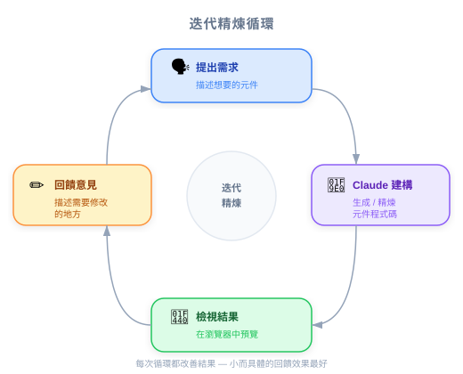

| 项目 | 细节 |
|---|---|
| 考试涵盖 | D2 — Tool Design & MCP Integration (18%), D3 — Effective Claude Code Usage (30%) |
| Task Statements | 2.5 (built-in tools — awareness), 3.5 (iterative refinement — intro) |
| 课程来源 | claude-code-in-action / 02-getting-started / Lesson 06（纯文字课程） |

课程使用一个小型 Node.js 应用，通过 Claude API 生成 UI 组件。PM 应理解：(1) 该项目展示 Claude Code 如何与真实代码库协作，(2) API key 是可选的 — 表示工具在没有外部 API 访问时也能运作，(3) 它引入的迭代式 generate-review-refine 工作流，是团队实际使用 Claude Code 的方式。
| 概念 | 商业类比 |
|---|---|
| 含可选 API 的演示项目 | 像 freemium SaaS — 核心功能无需付费即可使用，高级功能需要 key |
npm run setup 一次性初始化 |
像企业工具的入职设置 — 执行一次，然后开始工作 |
| 迭代式 UI 生成 | 像设计冲刺 — 展示原型、获取反馈、改进、重复 |
你的工程副总问：「Claude Code 实际上对我们的代码做什么？」
以演示项目为参考：
| 步骤 | 发生什么 | 商业影响 |
|---|---|---|
| 1. 开发者请 Claude 构建功能 | Claude 读取项目结构和相关文件 | 无需预索引；第一天就能在任何代码库上工作 |
| 2. Claude 生成实现 | 代码直接写入项目文件 | 不需要从另一个聊天窗口复制粘贴 |
| 3. 开发者在浏览器中查看 | 应用程序立即反映变更 | 反馈循环是秒级，不是小时级 |
| 4. 开发者提供改进反馈 | Claude 迭代改进实现 | 通过对话收敛到正确的解决方案 |
你的 CFO 问团队是否需要为每个开发者准备 Anthropic API key 才能使用 Claude Code。根据本课内容，正确答案是什么？